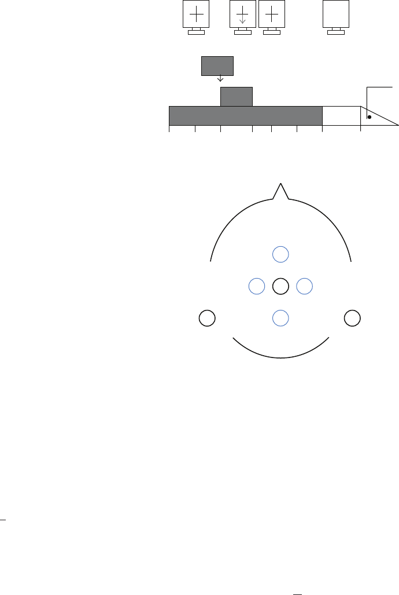
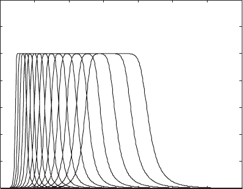
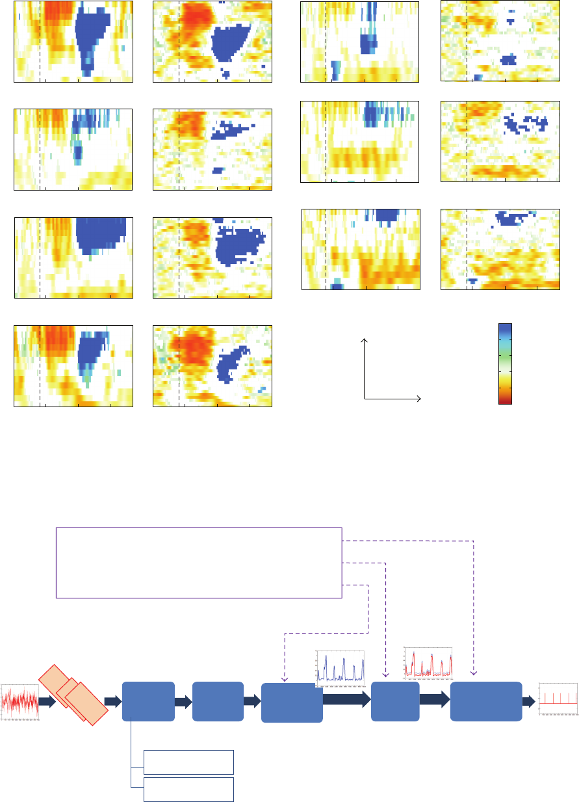
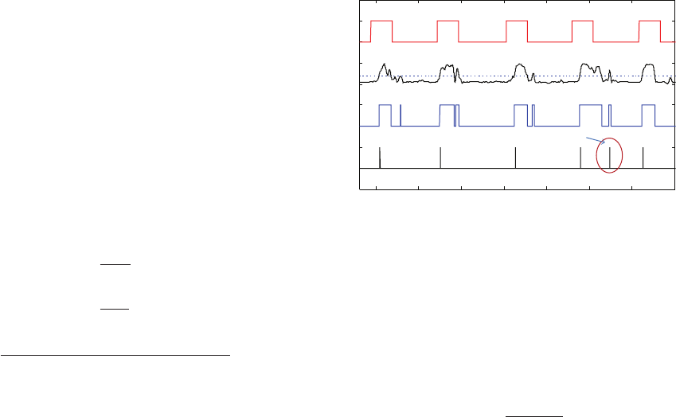
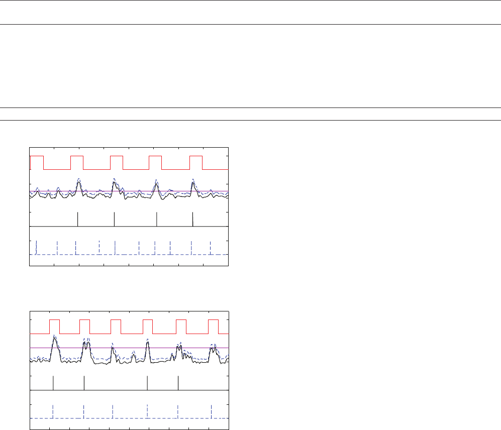

Hindawi Publishing Corporation
Advances in Human-Computer Interaction
Volume 2012, Article ID 185320, 10 pages
doi:10.1155/2012/185320
Research Article
A Combination of Pre- and Postprocessing Techniques to
Enhance S elf-Paced BCIs
Raheleh Mohammadi,
1
Ali Mahloojifar,
1
and Damien Coyle
2
1
Department of Biomedical Engineering, Tarbiat Modares University, Tehran 14115194, Iran
2
Intelligent Systems Research Centre, University of Ulster, Derry BT48 7JL, UK
Correspondence should be addressed to Ali Mahloojifar, mahlooji@modares.ac.ir
Received 5 July 2012; Revised 29 October 2012; Accepted 1 December 2012
Academic Editor: Christoph Braun
Copyright © 2012 Raheleh Mohammadi et al. This is an open access article dist ributed under the Creative Commons Attribution
License, which permits unrestricted use, distribution, and reproduction in any medium, provided the original work is properly
cited.
Mental task onset detection from the continuous electroencephalogram (EEG) in real time is a critical issue in self-paced brain
computer interface (BCI) design. The paper shows that self-paced BCI performance can be significantly improved by combining
a range of simple techniques including (1) constant-Q filters with varying bandwidth size depending on the center frequency,
instead of constant bandwidth filters for frequency decomposition of the EEG signal in the 6 to 36 Hz band; (2) subject-
specific postprocessing parameter optimization consisting of dwell time and threshold, and (3) debiasing before postprocessing by
readjusting the classification output based on the current and previous brain states, to reduce the number of false detections. This
debiasing block is shown to be optimal when activated only in special cases which are predetermined during the training phase.
Analysis of the data recorded from seven subjects executing foot movement shows a statistically significant 10% (P<0.05) average
improvement in true positive rate (TPR) and a 1% reduction in false positive rate (FPR) detections compared with previous work
on the same data.
1. Introduction
Brain-computer interface (BCI) is an alternative communi-
cation and enabling technology which offers the potential
to provide a nonmuscular path for physically impaired
individuals to convey messages and commands to the exter-
nal world [1]. Various applications of BCI for able-bodied
individuals have also been investigated [2–4]. Depending on
the mode of operation, BCI systems are categorized into
two main classes: synchronous (system paced or cue paced)
and asynchronous (self-paced). In a synchronous BCI, the
earliest type of BCI, the analysis, classification, and output
activation of the system are carried out during predefined
time intervals controlled by the machine/computer using
cues; that is, the onset of the mental activity is known in
advance. This mode of interaction is not natural for most
typical applications since the system dictates when the user
can control the application and must be switched off when
the user does not wish to use the system so that control cues
are stopped. In contrast, asynchronous or self-paced systems
are more natural for real-life applications since self-paced
BCIs allow the user to control the system when desired. These
systems have two operational states: intentional control (IC)
and no control (NC) [5]. During the IC state the user
controls and activates the BCI by intentionally varying their
brain signals. NC is the period the user is free to perform
any action such as watching TV, reading, relaxing, and eating
unless activating the BCI. Continuous classification of the
EEG signal is required to reveal the onset of IC or mental
activity. The ultimate goal of a self-paced system is detecting
the IC states and activating the system in these periods while
staying completely inactive during NC periods therefore the
percentage of true output activation during IC states, true
positive rates (TPR), and false activation during NC states,
false positive rates (FPR), determines the self-paced BCI
system performance.
One of the most common mental strategies for BCIs is
motor imagery because its features are well-defined physi-
ologically. Movement-related potential (MRP) is a response
in the EEG signal as a result of particular limb movement
2 Advances in Human-Computer Interaction
which lies in the frequency band below 4 Hz and starts about
1.5–1 sec before the movement onset [6]. In addition, due
to the movement or imagination of the movement, EEG
signal energy in specific frequency bands and also in specific
regions of brain fluctuates producing an event-related desyn-
chronization (ERD) before and during movement and event-
related synchronization (ERS) in the beta frequency band
after termination of the movement [7]. As ERD/S features are
observable in both real and imaginary movement [8, 9]and
also more accurate labeling of the EEG signal is possible for
real movement asynchronous experiments, real movement
data are used for testing new machine learning algorithms
in most of the self-paced BCIs [5, 10–19].
Detection of only one movement from the ongoing EEG
signal has been considered in self-paced BCI configurations
by different BCI groups [5, 10–19]. BCIs capable of detecting
only one brain pattern from the continuous EEG signal are
referred to as a brain switch and are suitable for controlling
different applications.
The first self-paced BCI system, referred to as Low-
Frequency-Asynchronous Switch Design (LF-ASD), was pro-
posedin[5] by Mason and Birch and was designed to
detect the MRPs in the EEG signal recorded during right
index finger movement. A wavelet-like function was a pplied
to extract the features, and a 1-nearest neighbor (1-NN)
classifier was used to distinguish the IC and NC classes/states.
Several changes such as adding the energy normalization
transform in the feature extraction block [10], adding a
moving average and debounce window in a postprocessing
block for decreasing the FPR [ 11], subject customization of
the feature generator’s parameter [12], and incorporating the
knowledge of the past paths of features into the system [13]
have been applied for improving the performance of the LF-
ASD.
In the last design of this switch, Fatourechi et al. [14]
proposed an improved version of the LF-ASD by extracting
features from three neurological phenomena: movement-
related potentials, changes in the power of Mu rhythms, and
changes in the power of Beta rhythms to detect the IC states.
A stationary wavelet transform followed by matched filtering
was applied as a feature extraction method. A set of SVM
classifiers were used for each neurological phenomenon clas-
sification from the idle state. Although the offline reported
results of this paper show significant improvement in LF-
ASD performance, the EEG signals are not continuously
classified in this research. Another drawback of this design
is that the NC periods were recorded in a special situation
where the subject was asked to count the number of times
thatawhiteballbouncedoff the screen [14].
In [15] movement onset detection from 64 EEG channels
recorded during rig ht-hand movement was investigated.
Using the power spectral density estimated by the Thomson
Multiplier Method for narrow-band spectral analysis of each
EEG channel and Davis Bouldin Index, the best features were
extracted and selec ted. A na
¨
ıve Bayes classifier was applied
to classify each sample to detect the movement onset. In
another work of this group [16], the first fully unsupervised
system for self-paced BCIs was suggested. An unsupervised
classification method based on Gaussian Mixture Model
(GMM) was applied.
In [17] Qian et al. developed a novel paradigm for a
motor-imagery-based brain-controlled switch that was inter-
active in the sense that the users performed repeated attempts
until the switch was turned on. The beta band event-
related frequency power from a single EEG Laplacian chan-
nel, recorded during the motor imagery of finger movement,
was monitored online. When the relative ERD power level
exceeded a predetermined threshold the switch was turned
on.
Another brain switch designed in [18] proved the suit-
ability of one single Laplacian derivation for detecting foot
movement in ongoing EEG. Twenty-nine band pass filters
with 2 Hz bandwidth from 6 to 36 Hz with 1 Hz overlap were
applied for extracting the band power values of the EEG
signal. Two distinct SVM classifiers were used to detect ERD
and ERS patterns separately. In the postprocessing block a
fixed dwell time and fixed refractory per iod for all 7 subjects
were used to reduce the false detections of the brain switch.
Using receiver oper ating characteristic (ROC) for balancing
TP and FP, each SVM classification performance and a
combination of the SVM outputs with a product rule were
reported. The results demonstrate that the ERS patterns are
more successful in detecting the onset of the foot movement
in ongoing EEG signal. The result of [19] also proves that
ERS phenomena are suitable for realizing a brain switch
due to some features such as its subject-specific stability,
specificity, and somatotopic organization. According to the
above characteristic of ERS, in this paper we only consider
ERS as a neurological phenomenon for discriminating foot
movement onset from the idle state.
In this paper we improve the onset detection perfor-
mance of a brain switch designed in [18]. For frequency
decomposition of the EEG signal we apply constant-Q filters
instead of constant bandwidth filters in self-paced BCI
systems. Constant-Q frequency decomposition has previ-
ously shown to produce better classification accuracies in
determining right- and left-motor imagery in synchronous
motor-imagery-based BCI systems [20, 21]. We show that
these filters significantly improve the performance of the
brain switch and reveal the ERS features in the ongoing EEG
signal much better than constant bandwidth filters.
Another innovation proposed in this paper is selecting
the optimum postprocessing parameters such as dwell time
and threshold for each subject and each combination of
train/test runs. Most of the research in self-paced system
design has a special postprocessing block for decreasing the
FPR. Event-by-event analysis of self-paced BCI systems has
been proposed in [22] and for its modification “threshold”,
“dwell time”, and “refractory period” also introduced. In
most of the self-paced systems [18, 19]“dwelltime”and
“refractory period” are fixed for all the subjects, and they
report the best results achieved in the test phase by changing
the threshold but for online application; all the parameters
should be available from the training phase. Therefore a
fixed threshold should be selected from the training data of
each subject. In this paper “dwell time” and “threshold” are
selected in the training phase, and refractory period is fixed

Advances in Human-Computer Interaction 3
for all the subjects. We observed that sometimes the selected
threshold and dwell times are very low for the test phase
classification output and in this situation the false positive
rates increase. Therefore we apply a debiasing block before
postprocessing which decreases the FPR by readjusting the
classification output based on the current and previous brain
states. This block is activated just in special cases which are
determined from the training phase because in some cases
adding debiasing results in decreasing TPR.
The remainder of the paper is organized as follows.
Section 2 outlines data acquisition and the methodology
of feature extraction, classification, performance evaluation,
and postprocessing parameter selection. Results of using
constant-Q filters and optimum postprocessing parameters
in the brain switch performance are illustrated and discussed
in Section 3; finally conclusions are presented in Section 4.
2. Methods
2.1. Data Description. Our analysis is performed on the data
provided by the laboratory of Brain Computer Interface
(BCI-Lab), Graz University of technology [18]. Data was
acquired from 7 subjects during the execution of a cue-based
foot movement. Each subject performed 3 runs with 30 trials
on the same day. At the beginning of the trial (t
= 0)
a “+” was presented; then at t
= 2 the presentation of
an arrow pointing downwards cues the subject to perform
a brisk foot movement of both feet for about 1-second
duration. The cross and cue disappear at t
= 3.25 s and
at t
= 6s, respectively. At t = 7.5 the trials end. In
between trials, a wait p eriod of maximum 1 second occurs
(Figure 1(a)). The recording was made using a g.tec amplifier
and Ag/AgCl electrodes. The sampling frequency was 250 Hz.
Sixteen monopolar EEG channels covering sensorimotor
areas were measured. From these data, one small Laplacian
derivation [23] over electrode position Cz was computed
using orthogonal neighbor electrodes (Figure 1(b)). The
surface Laplacian is approximated as follows:
V
Lap
Cz
= V
Cz
−
1
4
k∈S
j
V
k
,
(1)
where V
Cz
is the scalp potential EEG of the Cz channel and
S
j
is a set of four orthogonal neighbor electrodes.
2.2. Feature Extraction. Finding a suitable representative of
data which makes the classification or detection of brain
patterns easier is the goal of feature extraction. We select an
appropriate feature for extracting ERS as a stable and more
detectable movement-related pattern from spontaneous EEG
signals. The energy increase in specific frequency bands as
a result of correlated deactivation of neur a l networks in
specific cortical areas of the brain is referred to as event-
related synchronization (ERS). Band power which reveals
the energy or power fluctuations of the signal in specific
frequency bands is employed in this paper. Since band power
features have low-computational requirements, they have
been used widely in fast online BCI signal processing in self-
paced applications [24–26].
Cross
0
7.5
6543.2521
Blank
Random
Intertrial interval
Cue
Beep
Time (s)
0 ...1s
(a) Timing of the par adigm
Cz
Reference
(left mastoid)
Ground
(right mastoid)
(b) Electrodes positions
Figure 1: Paradigm and electrodes positions. (a) Foot movement
timing scheme of each trial, (b) electrodes position (Cz as a
Laplacian derivation).
2.2.1. Frequency Decomposition. Frequency decomposition
of a signal is done using constant bandwidth or constant-
Q (Q is the quality factor) filters. In constant-Q frequency
decomposition, the r a tio of center frequency to bandwidth
for all the filters is the same and equal to Q. In other words,
for low frequencies the frequency resolution is better while
for high frequencies the time resolution is better. After select-
ing center frequencies, for different amounts of Q, the band-
width of each filter is calculated as
Bw
=
f
c
Q
,
(2)
where Bw is the filter’s bandwidth, f
c
is the center frequency,
and Q is the quality factor of the filter. Different values of
Q result in various frequency decompositions of the signal.
If Q is selected to be small, the bandwidth of the filters
is large. The wideband signal components might be more
contaminated with substantial noise in the EEG signal.
For large Q, the bandwidth of the filters is small. In
this situation the percentage of overlap of neighboring fre-
quency bands decreases and therefore cannot provide a
proper redundancy of signals. In this paper for two different
Q ratios (Q
= 2&Q = 3) we constructed two sets of fifth-
order Butterworth bandpass filters with center frequencies

4 Advances in Human-Computer Interaction
at 6, 6.9, 7.8, 9, 10.2, 11.7, 13.4, 15.3, 17.5, 20.0, 22.8,
26.1, 29.8, and 33.5 Hz as suggested in [21] and cover the
total range from 6 to 36 Hz. The frequency responses of
these filters with Q
= 2 are illustrated in Figure 2.Itis
obvious that the filter banks with constant Q may increase
the redundancy of information in the feature set. The reasons
behind the vast frequency band selection from 6 to 36 Hz are
as follows: firstly the significant frequency characteristics of
motor-related patterns are in beta (13–30 Hz) and mu (8–
12 Hz) rhythm components [27] and secondly the optimal
frequency bands of ERS vary among subjects. The ERD/S
time-frequency maps of all subjects in Figure 3 show the
differences between each subjects’ optimum ERS frequency
bands. For each subject, ERD/S map using constant-
bandwidth filters and constant-Q filters is plotted. Figure 3
has been plotted using the ERDS map toolbox of Biosig
[28].
2.2.2. Band Power. During offline analysis, 28 logarithmic
band power features were extracted from time segments of
1 s length to give a comprehensive spectral description of
the EEG signals from 6 Hz to 36 Hz. Each segment has 250
samples with an overlap of 125 samples between adjacent
segments. The logarithmic band power features were com-
puted with two sets of constant-Q filters (Section 2.2.1). Each
time segment of 1-second length was dig itally band pass
filtered, squared and averaged over all samples within the
time segment and transformed with logarithm.
2.3. EEG Data Labeling. The continuous EEG data is cate-
gorized into two classes: baseline and movement. According
to the results of [18, 19] the ERS occurring after the end
of the motor task is the dominant feature for realizing an
asynchronous brain switch. Therefore all the samples were
labeled for the classification of ERS against all other brain
activities. According to the ERD/S map of the subjects,
(Figure 3) the ERS happens mostly in t
= 4-5 seconds in each
trial. Therefore the samples in t
= 4-5 s of each are labeled as
movement class or (class 1), and the rest of the samples are
labeled as baseline or (class 0). The data labeling is the same
as [18].
2.4. Classification. Support vector machines (SVMs) are
supervised lear ning methods that classify the data by con-
structing an N-dimensional hyper-plane for a given feature
set. Several advantages of SVM are as follows: it has a good
generalization property as a result of selecting the hyper-
plane which maximizes the margins, SVM is less prone to
overtraining, and it is also insensitive to the curse-of-dimen-
sionality.
The Gaussian-kernel-based SVM classifier has been used
in self-paced BCI research successfully [14, 18, 19, 29]. The
SVM performance depends on the regularization parameter
C and the Gaussian kernel bandwidth σ. These parameters
should be properly selected in the training phase. The goal is
to identify C, σ using training data so that the classifier can
accurately classify testing data. We use the libsvm software
[30] for implementing the SVM since this software provides
the posterior class probabilities in the output.
0 10 20 30 40 50 60 70
0
0.2
0.4
0.6
0.8
1
1.2
1.4
Frequency (Hz)
Frequency response
Figure 2: Frequency responses of constant-Q filters (Q = 2), 14
center frequencies are between 6 to 36 Hz.
2.4.1. SVM Parameter Selection and Training. For each
subject there are 3 runs each consisting of 30 trials. The
patterns from 2 runs out of 3 runs are used as training data.
For generalization purposes we will report the mean results
of three different combinations of train and test runs for
each subject. In each combination there are 60 training trials
of two runs available for selecting the parameters of SVM.
We use a “grid-search” on C and σ with a 10-fold cross-
validation. C and σ are varied from 2
−8
to 2
1
while for each
step the values of parameters are doubled. Various pairs of C,
σ are tried and the ones with the highest sample by sample
true-positive rate and lowest false-positive rate are selected.
In order to combine both conditions into a single measure we
calculate the Youden index [31] TF for each pair as follows:
TF
= TPR − FPR.
(3)
The best C and σ, the pair which maximizes TF, and the
whole training set (two runs) are used to train a final SVM
[18].
2.4.2. Testing. The remaining run is used for testing the
trained SVM. In order to simulate an online asynchronous
system, we continuously compute logarithmic band power
features applying a 1-second moving window at the rate
of the sampling interval. The SVM classifier calculates
the posterior class probability for patterns of the test run
(Figure 4).
2.5. Performance Evaluation. Performance measurement of
the online self-paced paradigm is carried out in an event-by-
event manner while in the training phase TPR and FPR were
measured on the basis of sample by sample analysis. Before
event-by-event analysis, the event class posterior probability
of classifier was postprocessed using threshold, dwell time,
and refractory period [22]. Dwell time is the amount of
time that the output signal of the classifier must exceed the
threshold to be considered as a control event. When one

Advances in Human-Computer Interaction 5
0246
0246
0246
0246 0246
0246
0246
0246
Constant-Q filtering Constant-BW filtering
S1
S2
S3
S4
(a)
0246
10
20
30
0246
10
20
30
0246
10
20
30
0246
0246
0246
S5
S6
S7
Constant-Q filtering Constant-BW filtering
Time (s)
Frequency (Hz)
ERS
(%)
ERD
1
0
−1
(b)
Figure 3: Time-frequency ERD/ERS maps of all subjects, calculated for all 3 runs together. Only significant (P<0.05) band power changes
in 0–7.5 s and in a frequency range 6–35 Hz are displayed. For each subject, constant-bandwidth filters (b) and constant-Q filters are plotted
(a). The significant power decrease (ERD) and power increase (ERS) are displayed in red and blue colors, respectively.
Trained model
Band pass
filtering
Feature
extraction
Log-BP
Classification
SVM
Debiasing Postprocessing
EEG signal
of test run
1 s segments
with 1 sample step
14 filters with
14 filters with
Q
= 2 (6–36 Hz)
Q
= 3 (6–36 Hz)
Optimum dwell time and threshold
Debiasing block activation/deactivation
SVM optimum parameters (C, σ)
t
=
n
t
=
1
t
=
0
...
Figure 4: Online self-paced brain switch block diagram.

6 Advances in Human-Computer Interaction
control event is detected, the output signal will be ignored
during a refractory period. If the control event is detected
in the intentional control (IC) periods of each, it is regarded
as a true positive, but a ny detection out of the IC period is
a f alse positive. For evaluation the time interval from t
= 3
to 5.5 seconds of each is considered as the IC period. This
interval is the same for all the subjects. The refractor y period
is also fixed for all the subjects and is equal to 750 samples
or 3 seconds. The refractory period limits the number of
detections of the brain switch and that longer values reduce
the number of false activations at expense of lowering the
bit rate. The event-by-event TPR and FPR are computed as
follows [18]:
TPR
=
TP
NTP
,
FPR
=
FP
NFP
,
NFP
=
total number of samples in test run
dwell time + Refractory period
,
(4)
where TP and FP are the number of true positive and false
positive detections, respectively. NTP is the number of IC
periods. Since only one detection is allowed in the brain
switch design, for this dataset NTP
= 30 (30 trials in test run).
Figure 5 shows the onset detection of the brain switch during
5 trials of the test run. Determining the threshold and dwell
time for each subject and each combination of runs plays a
very important role in the final performance of the system in
terms of detecting the movement onset.
2.6. Postprocessing
2.6.1. Opt imum Threshold and Dwell Time Selection. For
simulating the online asynchronous system, all the param-
eters should be tuned in the training phase. Selection of the
threshold and dwell time has a significant effect on the final
performance of the system. Therefore in the training phase
after selecting the best C and σ, we trained the SVM using the
logarithmic band power features of one of the training runs.
The log band power of another training run extracted in a
1s moving window was continuously classified by the trained
SVM. In this stage, for different values of threshold (varied
from 0.1 to 0.5 in steps of 0.01) and dwell time (varied from
30 to 70 samples in step of 5 samples) the event-by-event TPR
and FPR were calculated.
The best threshold value in each dwell time corresponds
to the point of the ROC curve (TPR versus FPR) closest to
line y
= 1 − x where the FPR is taken to be horizontal (x-
axis) and the TPR is vertical (y-axis). Analysis of a set of ROC
curvesleadstooptimalvalueselection.
2.6.2. Debiasing. The event class posterior probability used
for classification has DC offset which increases the number
of false positive detections. In order to decrease the number
of false detections in the test phase, each classifier output
sample can be debiased using the average of the previous
classifier outputs in a window with about 20 seconds size.
85 90 95 100 105 110 115 120
0
1
0
1
0
1
0
1
Time (s)
Threshold
False positive
(a)
(b)
(c)
(d)
Figure 5: (a) IC intervals or true labels of the signal during 5 trials,
(b) the posterior probability of movement class and its threshold,
(c) predicted labels, and (d) detected onsets after postprocessing
using dwell and refractory periods.
The following equation is used for debiasing the classifier
output at time instant t [32]:
C
t
= y
t
−
i=t
i=t−τ
y
i
τ
,
(5)
where y
t
is the classifier output at time instant t, C
t
is the
zero mean output, and τ is the number of previous classifier
outputs used for averaging. In a case of 20 seconds window
size, τ
= 250 × 20 = 5000 samples [32].
2.6.3. Automatic Activation of Debiasing Block. Figure 6(a)
shows an example of decreasing the number of FPs using
the debiasing block. However, in some cases (Figure 6(b))
debiasing might lead to a decrease in true positive rate.
Since the overall mean of the classifier output s ignal may
decrease as a result of debiasing, it is probable that the best
threshold selected in the training phase would be high; that
is, after debiasing a threshold which is too high it results in
low FP but also low TP which is not desirable. Therefore
in the training phase we can perform analysis to determine
whether the debiasing is required or not for final evaluation.
In the training phase for the best threshold and dwell time
selection, only half of the trials of the second run are used
for determining the optimum postprocessing parameter. The
other half of the trials is used for checking the necessity
to use the debiasing block in final test session. Using the
optimum threshold value and dwell time, TF
= TPR − FPR
(event-by-event analysis) is calculated for two situations:
with debiasing and without debiasing. The higher TF value
determines whether to apply the debiasing in test phase.
3. Results and Discussion
The results of onset detection are summarized in Tables 1–
4. In all the tables for each subject TPR and FPR values
are reported in the form of mean
± standard deviation. As
explained for each subject, 3 di fferent combinations of train/
test runs are possible. The average of TPR and FPR values of
all 3 combinations for each subject is presented in the tables.
Advances in Human-Computer Interaction 7
Table 1: Individual performance using constant-Q filters and constant bandwidth filters for different dwell times (threshold = 0.5).
Subj. ID
Constant-Q filters Constant Bandwidth filters
Dwell
= 30 Dwell = 40 Dwell = 60 Dwell = 30 Dwell = 40 Dwell = 60
TPR FPR TPR FPR TPR FPR TPR FPR TPR FPR TPR FPR
S1 94 ± 10 4 ± 594± 74± 496± 23± 388± 77± 389± 83± 485± 84± 4
S2 76
± 417± 770± 316± 660± 56± 253± 910± 335± 89± 525± 76± 3
S3 99
± 27± 299± 24± 193± 12 3 ± 193± 65± 494± 73± 392± 82± 2
S4 95
± 56± 493± 46± 493± 44± 382± 78± 275± 67± 170± 15 4 ± 1
S5 69
± 88± 365± 56± 351± 74± 443± 15 4 ± 136± 10 2 ± 331± 12 2 ± 3
S6 90
± 412± 587± 610± 383± 66± 261± 10 10 ± 149± 97± 439± 55± 3
S7 81
± 12 11 ± 879± 10 8 ± 677± 12 5 ± 265± 10 9 ± 654± 14 6 ± 442± 21 6 ± 3
Average 86 ± 79± 584± 68± 479± 84± 369± 10 8 ± 362± 95± 455± 12 4 ± 3
Table 2: Individual performance while the dwell time and threshold are automatically selected in training phase, the selected values also are
writtenforeachsubjectin3different combinations of runs. Run no. n shows the test run number.
Subjects ID TPR (mean ± SD) FPR (mean ± SD)
Dwell time Threshold
Run no. 1 Run no. 2 Run no. 3 Run no. 1 Run no. 2 Run no. 3
S1 95 ± 43± 3 70 50 60 0.55 0.56 0.29
S2 75
± 7 24 ± 16 30 35 30 0.37 0.5 0.27
S3 99
± 23± 3 50 50 40 0.36 0.5 0.15
S4 90
± 76± 3 70 30 55 0.44 0.43 0.31
S5 70
± 12 23 ± 17 50 30 30 0.38 0.4 0.25
S6 76
± 75± 2 55 70 70 0.48 0.5 0.5
S7 75
± 11 9 ± 9 55 70 40 0.5 0.5 0.41
Average 83 ± 610± 3
Table 3: Individual performance with optimum threshold value,
dwell time, and automatic activation of debiasing.
Subjects ID TPR (mean ± SD) FPR (mean ± SD)
S1 94 ± 23± 4
S2 61
± 29± 2
S3 99
± 22± 2
S4 89
± 56± 4
S5 66
± 12 7 ± 6
S6 76
± 75± 2
S7 76
± 10 6 ± 4
Average 80 ± 75± 4
In order to show the effect of using constant-Q filters in
improving the performance of the Brain switch, in Ta bl e 1
we illustrate the results of applying a set of fifth-order Butter-
worth filters with constant bandwidth (2 Hz bandwidth and
1 Hz overlap between 6 to 36 Hz) in one column and with
constant-Q (Q
= 2andQ = 3 and 14 center frequencies
from 6 to 36 Hz) in another column. The intentional control
is 3–5.5 seconds for evaluation, the threshold is 0.5, and the
refractory period is equal to 750 samples. For the dwell times
equal to 30, 40, and 60 samples, the results are reported in
three subcolumns for each type of filter to show the changes
of the performance in different dwell times.
According to the results of Table 1 the average TPR
achieved by applying constant-Q filter is significantly better
than the constant bandwidth approach. In a two-sided non-
parametric statistical test, the Wilcoxon signed rank test [33,
34] was used that the improvement is statistically significant
(P<0.05).
These results confirm that constant-Q filters are more
capable of extracting ERS features from the ongoing EEG
signal compared with constant bandwidth filters. The results
of constant-Q filtering prove our prediction according to the
ERD/S map (Figure 3) using constant-Q filters. According
to these maps for all subjects denser ERS is present using
constant-Q filters in contrast to a sparse ERS using constant
bandwidth filters. One of the nice features of the constant
Q filter is its increasing time resolution towards higher
frequencies and increasing frequency resolution in lower
frequencies which contributes to define more precisely the
movement onsets in EEG signal. This characteristic decreases
the nonstationary effects of the EEG signal and results in
performance improvement specially for some of the subjects
which suffers more from nonstationarity. Moreover, the filter
banks with constant Q may increase the redundancy of
information in the feature set therefore when the subject-
specific frequency bands are not applied, the classifier per-
formance can be improved. The results in the remaining
tables are therefore reported with constant-Q filters. For
different dwell times we report the results to show the effect
of choosing optimum dwell time in the final performance of

8 Advances in Human-Computer Interaction
Table 4: Comparison of the results of this paper and results presented in [18].
Subjects ID
Constant-Q filter + dwell time selection Results of paper [18]
TPR (mean
± SD) FPR (mean ± SD) TPR (mean ± SD) FPR (mean ± SD)
S1 98 ± 43± 397± 53± 2
S2 61
± 28± 161± 10 7 ± 2
S3 100
± 03± 294± 54± 4
S4 96
± 26± 283± 12 4 ± 3
S5 65
± 97± 254± 14 7 ± 2
S6 91
± 10 6 ± 379± 12 8 ± 1
S7 83
± 95± 252± 20 6 ± 2
Average 85 ± 6 5 ± 274± 21 6 ± 3
60 65 70 75 80 85 90 95 100
0
1
0
1
1
0
0
1
Time (s)
Threshold
(1)
(2)
(3)
(4)
(a)
70 75 80 85 90 95 100 105 110 115 120
0
1
0
1
1
0
0
1
Time (s)
(2)
(3)
(4)
(1)
Threshold
(b)
Figure 6: An example of comparison between biased and debiased
classification output in detecting the onset of the movement: (1) IC
intervals, (2) dashed line: biased classification output and st raight
line: debiased output. (3) Detected onsets using debiased output
and (4) detected onsets using biased output. ((a) the case that
debiasing improves the performance by decreasing FP detections,
(b) the case that debiasing decreases the TPR).
each subject. In Table 1 the threshold value is also fixed for all
subjects. Adjusting the threshold also can improve the results
of the classification significantly. Increasing and decreasing
the dwell time and threshold value selection can impact the
result considerably; therefore for designing a brain switch
suitable for online applications, it is recommended that these
values are determined in the training phase properly.
Table 2 shows the results of the brain switch where
threshold and dwell time are selected automatically in the
training phase as suggested. This automatic selection is done
since we cannot select the proper value for these parameters
randomly. The mean value of the TPR is satisfactor y, but
the FPR value of three subjects S2, S5, and S7 are high.
The high value of FPR for these subjects shows that the best
dwell time and threshold selected using the training data are
not necessarily the best ones for the test data because EEG
signal is nonstationary. In order to decrease false positive
detections the debiasing block can be added to the output of
the classifier. As explained in Section 2.6.2, this block is not
activated always. The posterior probability of the classifier
will be debiased if its effectiveness has been confirmed in
the training phase. The results of automatic applying the
debiasing block in the output of the classifier are il lustrated
in Ta ble 3. Although the mean value of TPR has decreased
for some subjects the problem of a high number of false
detections has been solved using this block. Therefore the
automatic selection of the dwell time and threshold value
along with automatic activation of the debiasing block results
in acceptable performance since the FPR is less than 10%
for all the subjects. Although it seems some of the columns
of Ta ble 1 (dwell
= 60) also result in the same performance,
selecting that specific dwell time and threshold which lead
to acceptable performance cannot be done randomly, and in
some cases random selection of these parameters (dwell
= 30
and 40) might result in the high FPR value (FPR > 10%).
In order to prove our claim of improving the perfor-
mance of the brain switch designed in [18] we compare the
results of our method and the reported results of [18]in
Table 4. The results of [18] were reported after ROC curve
analysis in the test phase. The maximum TPR associated to
aFPR< 0.1 had been selected for each combination of runs
for each subject. The left side of the Table 4 shows our results
calculated after ROC analysis in the test phase while the best
dwell time has been selected in the training phase. The right
side of Ta bl e 4 is the reported results of ERS classification
[18]. Comparing the mean TPR and FPR results of the right
and left columns, the performance improvement of the brain
switch provided by the proposed adjustments is clear. A two-
sided nonparametric statistical hypothesis test, Wilcoxon
signed rank [33, 34], between the accuracies obtained by
the proposed method and those reported in [18], shows a
Advances in Human-Computer Interaction 9
significant improvements in the TPR (P<0.03), while the
FPR decrease is not statistically significant (P
= 1).
The differences between the results reported in the
Table 4 (left column) and Ta ble 3 originate from threshold
value. In Table 3 the results are calculated in only one thresh-
old value selected in the training phase, while the results
illustrated in the Table 4 are selected between various results
calculated for different threshold values in the test phase with
the same criteria of [18] (maximum TPR associated with
FPR < 0.1).
In the following we briefly count the differences between
the brain switch designed in this paper and in [18]which
leads to performance improvement: (1) applying constant-
Q filters instead of filters with equal bandwidth provides
more separable features between event class and nonevent
class. (2) Increasing the refractory period from 2 seconds
(500 samples) to 3 seconds (750 samples) has a positive
effect on the final performance. Since the summation of
the refractory period and dwell time is less than the time
duration between two consecutive events, increasing the
refractory period does not cause any problem. (3) Automatic
threshold value and dwell time selection using training data
prepare the system for online application. For the cases with
low selected threshold value and short optimum dwell time,
debiasing plays an important role in decreasing the number
of false detections. Its automatic activation using the training
results prevents losing the hig h true positive rates in the cases
of some subjects.
4. Conclusion
The results of this paper illustrate that using constant-Q
filters without any optimization of frequency bands for each
subject resulted in more separable features of event and
nonevent class samples. The automatic selection of dwell
time and threshold values in the training session makes
the brain switch suitable for online applications. Adding a
debiasing block to the classification output signal only in
special cases which are predetermined during the training
phase also resulted in a more accurate brain switch. Overall,
the study shows that combining a range of simple techniques
including constant-Q filters, optimum threshold values,
optimum dwell time, and automatic activation of a debiasing
block improves detection of foot movement in ongoing EEG.
Although previous studies have investigated these processes
individually, this study provides new evidence to suggest
that combining these var ious techniques can improve self-
paced BCI performance. With the proposed combination
of methods, no adjustment or collaboration (e.g., threshold
setting) is required during the test phase, whereas many other
studies require a number of parameters to be adjusted to
account for nonstationar y changes.
Acknowledgment
The authors are grateful to Professor G. Pfurtscheller and
Mr. T. Solis-Escalante of the Laboratory of Brain Computer
Interface (BCI-Lab), Graz University of technology, for
making their data available.
References
[1] J. R. Wolpaw, N. Birbaumer, D. J. McFarland, G. Pfurtscheller,
and T. M. Vaughan, “Brain-computer interfaces for commu-
nication and control,” Clinical Neurophysiology, vol. 113, no.
6, pp. 767–791, 2002.
[2] B. Z. Allison, E. W. Wolpaw, and J. R. Wolpaw, “Brain-
computer interface systems: progress and prospects,” Expert
Review of Medical Devices, vol. 4, no. 4, pp. 463–474, 2007.
[3] S.MarcelandJ.D.Mill
´
an, “Person authentication using brain-
waves (EEG) and maximum a posteriori model adaptation,”
IEEE Transactions on Pattern Analysis and Machine Intelligence,
vol. 29, no. 4, pp. 743–752, 2007.
[4] R. Scherer, A. Schloegl, F. Lee, H. Bischof, J. Jan
ˇ
sa, and G.
Pfurtscheller, “The self-paced graz brain-computer interface:
methods and applications,” Computational Intelligence and
Neuroscience, vol. 2007, Article ID 79826, 9 pages, 2007.
[5] S. G. Mason and G. E. Birch, “A brain-controlled switch
for asynchronous control applications,” IEEE Transactions on
Biomedical Engineering, vol. 47, no. 10, pp. 1297–1307, 2000.
[6] C. Babiloni, F. Carducci, F. Cincotti et al., “Human movement-
related potentials vs desynchronization of EEG alpha rhythm:
a high-resolution EEG study,” NeuroImage,vol.10,no.6,pp.
658–665, 1999.
[7] G. Pfurtscheller and F. H. Lopes da Silva, “Event-related
EEG/MEG synchronization and desynchronization: basic
principles,” Clinical Neurophysiolog y, vol. 110, no. 11, pp.
1842–1857, 1999.
[8] G. Pfurtscheller and C. Neuper, “Motor imagery activates
primary sensorimotor area in humans,” Neuroscience Letters,
vol. 239, no. 2-3, pp. 65–68, 1997.
[9] E. Gerardin, A. Sirigu, S. L
´
ehericy et al., “Partially overlapping
neural networks for real and imagined hand movements,”
Cerebral Cortex, vol. 10, no. 11, pp. 1093–1104, 2000.
[10] Z. Yu, S. G. Mason, and G. E. Birch, “Enhancing the per-
formance of the LF-ASD brain computer interface,” in Pro-
ceedings of the 2nd Joint Engineering in Medicine and Biology,
24th Annual Conference and the Annual Fall Meeting of the
Biomedical Engineering Society EMBS/BMES Conference, vol.
3, pp. 2443–2444, October 2002.
[11] J. F. Borisoff,S.G.Mason,A.Bashashati,andG.E.Birch,
“Brain-computer interface design for asynchronous control
applications: improvements to the LF-ASD asynchronous
brain switch,” IEEE Transactions on Biomedical Engineering,
vol. 51, no. 6, pp. 985–992, 2004.
[12] A. Bashashati, M. Fatourechi, R. K. Ward, and G. E. Birch,
“User customization of the feature generator of an asyn-
chronous brain interface,” Annals of Biomedical Engineering,
vol. 34, no. 6, pp. 1051–1060, 2006.
[13]A.Bashashati,S.Mason,R.K.Ward,andG.E.Birch,“An
improved asynchronous brain interface: making use of the
temporal history of the LF-ASD feature vectors,” Journal of
Neural Engineering, vol. 3, no. 2, pp. 87–94, 2006.
[14] M. Fatourechi, R. K. Ward, and G. E. Birch, “A self-paced
brain-computer interface system with a low false positive rate,”
Journal of Neural Engineering, vol. 5, no. 1, pp. 9–23, 2008.
[15] C. S. L. Tsui, A. Vuckovic, R. Palaniappan, F. Sepulveda, and J.
Q. Gan, “Narrow band spectral analysis for movement onset
detection in asynchronous BCI,” in Proceedings of the 3rd
10 Advances in Human-Computer Interaction
International Workshop on Brain-Computer Interfaces, pp. 30–
31, Graz, Austria, 2006.
[16] B. A. S. Hasan and J. Q. Gan, “Unsupervised movement onset
detection from EEG recorded during self-paced real hand
movement,” Medical and Biological Engineering and Comput-
ing, vol. 48, no. 3, pp. 245–253, 2010.
[17] K. Qian, P. Nikolov, D. Huang, D. Y. Fei, X. Chen, and O. Bai,
“A motor imagery-based online interactive brain-controlled
switch: paradigm development and preliminary test,” Clinical
Neurophysiology, vol. 121, no. 8, pp. 1304–1313, 2010.
[18] T. Solis-Escalante, G. M
¨
uller-Putz, and G. Pfurtscheller,
“Overt foot movement detection in one single Laplacian EEG
derivation,” Journal of Neuroscience Methods, vol. 175, no. 1,
pp. 148–153, 2008.
[19] G. Pfurtscheller and T. Solis-Escalante, “Could the beta
rebound in the EEG be suitable to realize a “brain sw itch”?”
Clinical Neurophysiology, vol. 120, no. 1, pp. 24–29, 2009.
[20] T. Wang, J. Deng, and B. He, “Classifying EEG-based motor
imagery tasks by means of time-frequency synthesized spatial
patterns,” Clinical Neurophysiology, vol. 115, no. 12, pp. 2744–
2753, 2004.
[21] N. Yamawaki, C. Wilke, Z. Liu, and B. He, “An enhanced time-
frequency-spatial approach for motor imagery classification,”
IEEE Transactions on Neural Systems and Rehabilitation Engi-
neering, vol. 14, no. 2, pp. 250–254, 2006.
[22] G. Townsend, B. Graimann, and G. Pfurtscheller, “Continuous
EEG classification during motor imagery—simulation of an
asynchronous BCI,” IEEE Transactions on Neural Systems and
Rehabilitation Engineering, vol. 12, no. 2, pp. 258–265, 2004.
[23] B. Hjorth, “An on line transformation of EEG scalp potentials
into orthogonal source derivations,” Electroencephalography
and Clinical Neurophysiology, vol. 39, no. 5, pp. 526–530, 1975.
[24] R. Leeb, D. Friedman, G. R. M
¨
uller-Putz, R. Scherer, M. Slater,
and G. Pfurtscheller, “Self-paced (asynchronous) BCI control
of a wheelchair in virtual environments: a case study with a
tetraplegic,” Computational Intelligence and Neuroscience, vol.
2007, Article ID 79642, 8 pages, 2007.
[25] R. Leeb, D. Friedman, R. Scherer, M. Slater, and G.
Pfurtscheller, “EEGbased, “walking” of a tetraplegic in virtual
reality,” in Proceedings of the Maia Brain Computer Interfaces
Workshop—Challenging Brain Computer Interfaces: Neural
Engineering Meets Clinical Needs in Neurorehabilitation,pp.
43–44, 2006.
[26] F. Lotte, Y. Renard, and A. L
´
ecuyer, “Self-paced brain-com-
puter interaction with virtual worlds: a quantitative and
qualitative study ‘out-of-the-lab’,” in Proceedings of the 4th
International Brain-Computer Interface Workshop and Training
Course, 2008.
[27] G. Pfurtscheller and C. Neuper, “Motor imagery direct
communication,” Proceedings of the IEEE,vol.89,no.7,pp.
1123–1134, 2001.
[28] A. Schlogl, C. Brunner, R. Scherer, and A. Glatz, “BioSig: an
open-source software library for BCI research,” in Towards
Brain-Computer Interfacing, pp. 347–358, MIT Press, Boston,
Mass, USA, 2007.
[29] F. Lotte, M. Congedo, A. L
´
ecuyer, F. Lamarche, and B. Arnaldi,
“A review of classification algorithms for EEG-based brain-
computer interfaces,” Journal of Neural Engineering, vol. 4, no.
2, pp. R1–R13, 2007.
[30] C.-C. Chang and C.-J. Lin, “LIBSVM: a library for support
vector machines,” Software, 2001, http://www.csie.ntu.edu
.tw/
∼cjlin/libsvm/.
[31] M. Sokolova, N. Japkowicz, and S. Szpakowicz, Beyond Accu-
racy, F-Score and ROC: A Family of Discr iminant Measures for
Performance Evaluation, Springer, Berlin, Germany, 2006.
[32] A. Satti, D. Coyle, and G. Prasad, “Continuous EEG clas-
sification for a self-paced BCI,” in Proceedings of the 4th
International IEEE/EMBS Conference on Neural Engineering
(NER’09), pp. 315–318, Antalya, Turkey, May 2009.
[33] J. D. Gibbons, Nonparametric Statistical Inference,Marcel
Dekker, New York, NY, USA, 1985.
[34] M. Hollander and D. A. Wolfe, Nonparametric Statistical Meth-
ods, John Wiley & Sons, Hoboken, NJ, USA, 1999.

Submit your manuscripts at
http://www.hindawi.com
International Journal of
Reconfigurable
Computing
Hindawi Publishing Corporation
http://www.hindawi.com Volume 2013
International Journal of
Computer Games
Technology
Hindawi Publishing Corporation
http://www.hindawi.com Volume 2013
Modelling &
Simulation
in Engineering
Hindawi Publishing Corporation
http://www.hindawi.com Volume 2013
ISRN
Software
Engineering
Hindawi Publishing Corporation
http://www.hindawi.com Volume 2013
Hindawi Publishing Corporation
http://www.hindawi.com Volume 2013
Applied
Computational
Intelligence and Soft
Computing
Robotics
Journal of
Hindawi Publishing Corporation
http://www.hindawi.com Volume 2013
Advances in Software
Engineering
Hindawi Publishing Corporation
http://www.hindawi.com Volume 2013
ISRN
Computer Graphics
Hindawi Publishing Corporation
http://www.hindawi.com Volume 2013
Advances in
Articial
Intelligence
Hindawi Publishing Corporation
http://www.hindawi.com Volume 2009
Hindawi Publishing Corporation
http://www.hindawi.com Volume 2013
Hindawi Publishing Corporation
http://www.hindawi.com Volume 2013
The Scientic
World Journal
ISRN
Articial
Intelligence
Hindawi Publishing Corporation
http://www.hindawi.com Volume 2013
Hindawi Publishing Corporation
http://www.hindawi.com Volume 2013
Human-Computer
Interaction
Advances in
Hindawi Publishing Corporation
http://www.hindawi.com Volume 2013
ISRN
Machine Vision
Computational
Intelligence &
Neuroscience
Hindawi Publishing Corporation
http://www.hindawi.com Volume 2013
Advances in
Fuzzy
Systems
Hindawi Publishing Corporation
http://www.hindawi.com
Volume 2013
Journal of
Computer Networks
and Communications
Hindawi Publishing Corporation
http://www.hindawi.com Volume 2013
Articial
Neural Systems
Advances in
Hindawi Publishing Corporation
http://www.hindawi.com
Volume 2013
ISRN
Communications
and Networking
Hindawi Publishing Corporation
http://www.hindawi.com Volume 2013
Hindawi Publishing Corporation
http://www.hindawi.com Volume 2013
Distributed
Sensor Networks
International Journal of